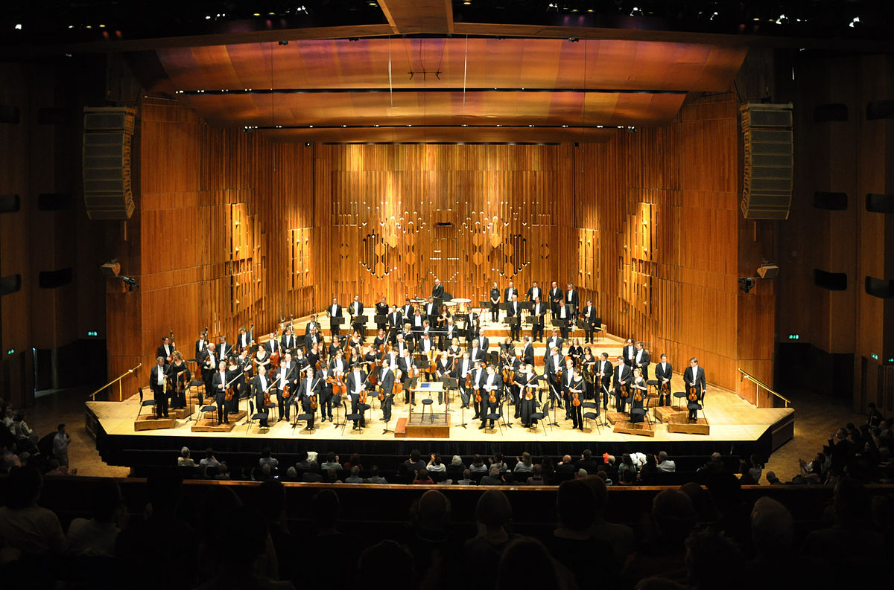

London Symphony Orchestra
London Symphony Orchestra (LSO)
adalah salah satu orkestra simfoni terbesar di Inggris
LSO dikenal luas karena banyak rekaman soundtrack filmnya, termasuk yang disutradarai oleh komposer seperti John Williams, Alan Silvestri, James Horner. Beberapa film terkenal tersebut adalah:
- Star Wars
- Who Framed Roger Rabbit
- Indiana Jones
- The Land Before Time
- Brave
- Titanic
- Harry Potter
- Eragon
- Pirates of the Caribbean
- The Avengers
- The Mummy Returns
Salah satu soundtrack paling terkenal yang dibawakan oleh orkestra adalah tema musik Darth Vader dari Star Wars